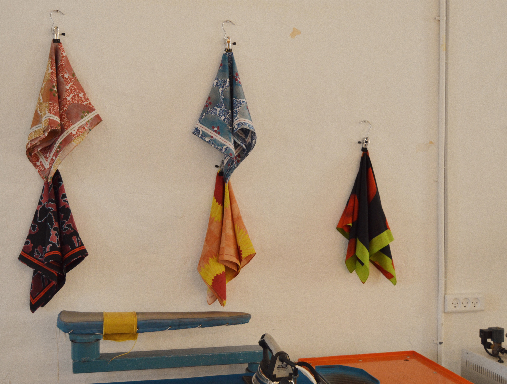
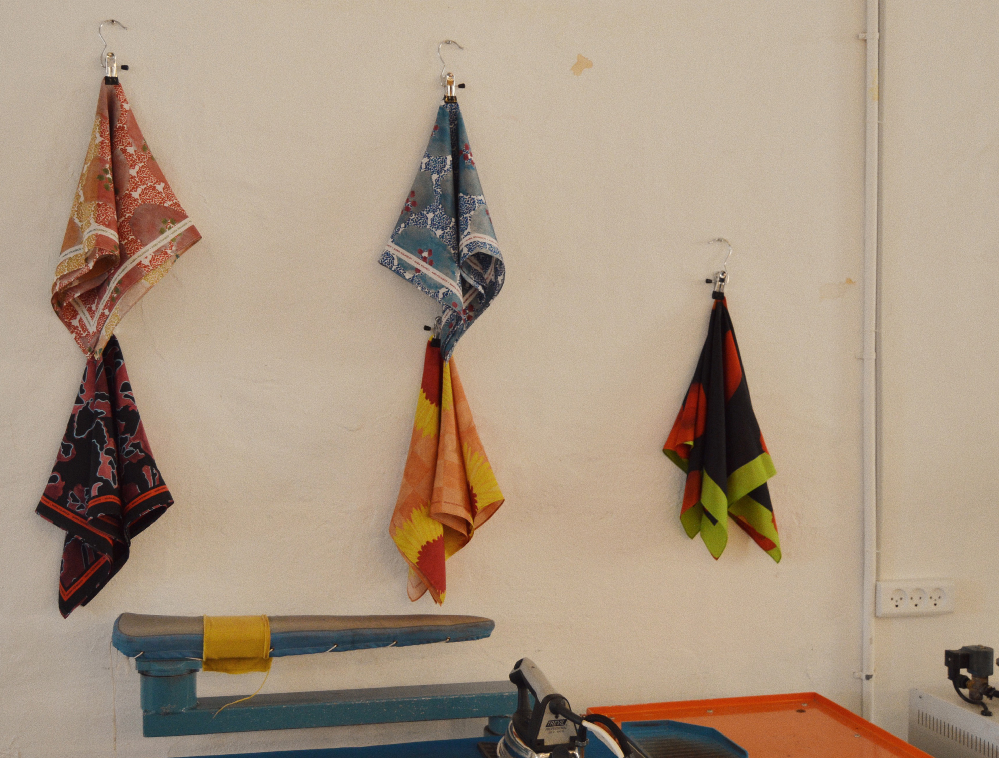

Maria Holmskov
Maria Holmskov blev etableret i 2020 i København med et særligt fokus på det gode håndværk og med en mission om at bidrage til slow fashion-konceptet. Prints er selve omdrejningspunktet for Maria Holmskov, som særligt har naturen som sin inspirationskilde. Hun dissikerer blomsten del for del i sin designproces, og sørger altid for, at have en personlig fortælling med i sin designs. Processen starter med håndmalede elementer som sammensættes på computeren og derefter bliver digitalprintet i Europa. Hver kollektion er bygget op om silketørklæde med et lille, men kurateret udvalg af tøj og accessories.
 
